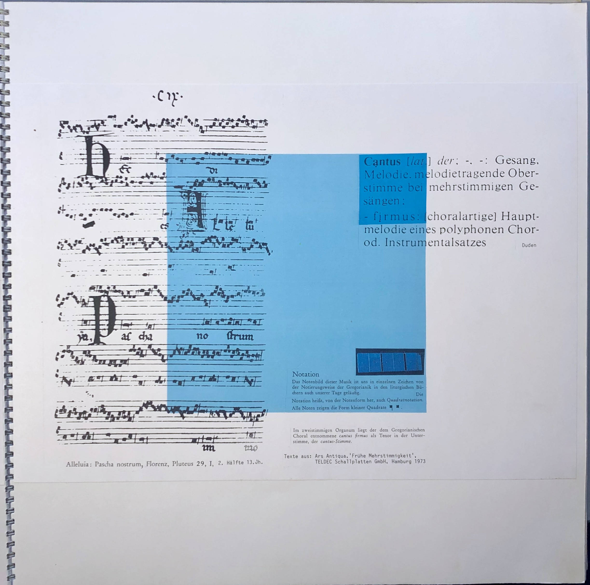

Lichtspielende, quadratische Segel begrüssen die Besucher:innen beim Eintreten in die Franziskanerkirche in Solothurn. Zwölf Segel in der Himmelsfarbe Blau sind im Kirchenschiff zwischen den Säulen als Lichtmembrane und im Mittelschiff als Deckensegel gehisst. Sie führen den Blick von West nach Ost und vernetzen sich mit den Seitenaltarbildern, dem Vierungssegel über dem Altar, dem Altarraum und dessen blauem Mobiliar: Altar, Kredenz, Sedilien und Ambo. Vor der Chorschranke ist das Kirchenschiff ein einheitlicher Raum. Dies war ein Hauptziel der letzten Restaurierung, den Ort der liturgischen Handlung näher an die Gemeinde zu bringen.

Adelheid Hanselmann und Jörg Mollet, cantus firmus . (Bild: Adriana Basso Schaub)
cantus firmus
Im Rahmen der Aussen- und Innenrestaurierung der Franziskanerkirche zwischen 1994 und 1996 haben Adelheid Hanselmann (*1946) und Jörg Mollet (*1946) den Wettbewerb für die künstlerische Ausstattung mit ihrem Projekt cantus firmus gewonnen. Der Begriff cantus firmus ist lateinisch für «feststehender Gesang» und stammt aus der Gregorianik. Er bezeichnet die feststehende, einstimmige und unverzierte Hauptmelodie des liturgischen Gesangs oder innerhalb eines mehrstimmigen Chor- oder Instrumentalsatzes. Die Noten der liturgischen Gesänge hatten die Form kleiner Quadrate. Das Quadrat und die Farbe Blau sind auch der tonangebende Klangraum, der cantus firmus, innerhalb der weissen, klassizistischen Innenausstattung der Franziskanerkirche, die seit 1877 die Kirche der christkatholischen Gemeinde und seit 1895 in deren Besitz ist.
Jörg Mollet, aus dem quadratischen Projektalbum cantus firmus. (Bild: Adriana Basso Schaub)
ornamenta ecclesiae
Die Konzeptidee cantus firmus öffnet inhaltlich und formal ein Fenster in die Entstehungszeit der Kirche (1299), zum Kirchenpatron Franziskus von Assisi (1181/82–1226) und zum Weltverständnis des Mittelalters. Die Bild-Raum-Gestaltung überzeugt als Gesamtkunstwerk und überrascht mit der tiefen gedanklichen Durchdringung der Innenausstattung als ornamenta ecclesiae (Ausschmückung der Kirche). Die Kunst war vor Jahrhunderten eng mit der Kirche und dem Gottesdienst verbunden. So ist sie auch heute in der Kirche zu Franziskanern wie im Mittelalter nicht nur Zierde, Schmuck oder funktionale Ausstattung, sondern bildet eine vielschichtige Ganzheit mit dem Jahreskreislauf, dem liturgischen Kirchenjahr und der Weltanschauung des Mittelalters: die Kommunikation zwischen Mikrokosmos und Makrokosmos.
Vierzahl und Giottoblau
Die Vierzahl als irdische Zahl von Raum und Zeit wird im Quadrat
sichtbar gemacht, indem die vier Elemente als Bausteine des Kosmos, die
vier Himmelsrichtungen und die vier Jahreszeiten fortwährend miteinander
im natürlichen Spannungsfeld stehen und sich im Kreislauf bewegen und
erneuern.
Die von Giotto di Bondone (1266/67–1337) ausgemalte
Grabeskirche San Francesco in Assisi und die Scrovegni-Kapelle in Padua
geben dem Künstlerteam in Solothurn weitere Bezugsfelder für die
abstrakte Umsetzung. Sie übernehmen für die Papiersegel aus japanischem
Shojipapier das quadratische Format, das durchgängige «Giottoblau» und
nehmen erneut den Bezug zum Kirchenheiligen Franziskus von Assisi auf.
Mass, Zahl, Rhythmus, Form und die intensive Grundfarbe widerspiegeln
sich auch in der Altarraummöblierung, die aus Fichte mit Ahornfurnier
gebaut und ebenfalls mit mehrschichtigem, blauem Shojipapier ummantelt
ist.
Giotto, in dessen Malerei sich Orient und Okzident
synthetisieren und sich eine neue Wirklichkeit kristallisiert, ersetzte
den byzantinischen, überirdischen Goldgrund durch das umbrische
Himmelblau. Der Maler Giotto sowie der Prediger Franziskus galten als
Erneuerer ihrer Zeit, indem sie das Alltägliche, die Natur, Landschaft
und Geschöpfe ehrten und sie mit einer in sich beziehungsreichen
Universalsprache sichtbar machten. Der Bettelmönch predigte Armut und
die Lehre, dass Gott sich in den alltäglichen, in den irdischen Dingen
zeige. Der Sonnengesang des Poverello (Armer) Franziskus bildet
in der künstlerischen Ausstattung der Franziskanerkirche das
metaphysische Grundgerüst im Andenken an das 1280 gegründete und 1857
aufgehobene Franziskanerkloster in Solothurn.
Jörg Mollet, Deckensegel aus der Sternenstrophe. (Bild: Adriana Basso Schaub)
Sonnengesang und Kosmologie
In der Natur und in der Ordnung ihrer Geschöpfe fand Franziskus einen
wichtigen Raum, in dem er Gottes Nähe erlebte und den er als Gegenwelt
zur Zivilisation empfand. Dies brachte er in seinem Lob an die
Schöpfung, dem Sonnengesang, zum Ausdruck.
Die vier Deckensegel
über dem Mittelschiff repräsentieren die Sternenstrophe des Gesangs. Die
gesprenkelte Sternenspur auf den Papiersegeln weist den Weg in Richtung
Osten zum Altarbereich. Über dem Altar schwebt das lichtgelbe
Sonnensegel (Vierungssegel) mit den Quadraten aus ultramarinen
Edelsteinpigmenten (Lapislazuli) in den vier Himmelsrichtungen. Die
insgesamt zwölf Lapislazuliquadrate auf den Deckensegeln und dem
Vierungssegel zeichnen ein Bild des Himmels und verweisen mit ihrer Zahl
symbolisch auf das himmlische Jerusalem.
Unter dem Sonnensegel ist der Ort der Dulderstrophe (Frieden) und der
Todesstrophe (Karfreitag) aus der Welt des Menschen im Altartuch und dem
Altarvorsatz sichtbar gemacht. Das leinene Altartuch, durch den
christkatholischen Frauenverein hergestellt, zeigt ein Kreissegment, das
der Breite des Kirchenschiffs entspricht und so die Gemeinde mit
einbeziehen soll. Der Kreis als Zeichen für Einheit und Vollkommenheit.
Der Altarvorsatz versinnbildlicht durch die Abwesenheit von Licht den
Tod Jesu in den Farben Schwarz und Weiss. Einzig das Lapislazuliquadrat
steht als Signal und Ankündigung für die Überwindung der Dunkelheit und
des Todes.
Über dem nördlichen Seitenaltar ist die Überwindung des
Todes im Osterbild dargestellt. Ein weisses, eingesperrtes Quadrat
strebt von der Dunkelheit am unteren Bildrand in Richtung des Lichts
nach oben und will sich befreien. Wie das Osterbild ist auch das
Pfingstbild über dem südlichen Seitenaltar doppelt so hoch (240x120 cm)
wie die anderen Segel. Vibrierende Lichtströme giessen sich von oben in
das Pfingstbild aus und verdichten sich in einem sonnengelben Quadrat
innerhalb dieses brausenden Lichtereignisses.
Die im Kirchenschiff
zwischen die Säulen gespannten Lichtmembrane spielen im Sonnenlicht und
verändern ihr Bild fortlaufend. Sie zeichnen den Lauf der Sonne nach und
schaffen eine Verbindung zwischen Innenraum und Aussenraum, zwischen
Natur und Architektur. Die Wind-, Wasser-, Feuer- und Erdstrophe aus dem
Sonnengesang werden mit der ungegenständlichen Bildsprache in den Farben
der Elemente offenbar. Die Lichtmembrane vereinen die Welt der Elemente
mit den Jahreszeiten und Himmelsrichtungen: Wind, Wasser, Feuer, Erde,
Frühling im Südosten, Sommer im Südwesten, Herbst im Nordwesten und
Winter im Nordosten.
Jörg Mollet, links Osterbild/Einleitungsstrophe, rechts Pfingstbild/Schlussstrophe. (Bild: Adriana Basso Schaub)
Harmonie und Ordnung zwischen Mikrokosmos und Makrokosmos
Mass, Zahl, Rhythmus, Form und durchgehende abstrakte Motive werden mit der ungegenständlichen Kunst in Quadrat, Farbe und ihrer Topografie im Raum sinnlich erfahrbar gemacht und mit der Lichtmetaphorik unterstrichen. Geist und Materie – Himmel und Erde – Kirche und Kunst – Innen- und Aussenraum – Gegenwart und Vergangenheit sind hier keine gegensätzlichen Polaritäten, sondern stehen in Beziehung und Kommunikation zueinander. Sie bedingen einander, und nur im Zusammenspiel entsteht Wirklichkeit und Lebendigkeit. Die Franziskanerkirche bietet einen Ort der Einkehr, Besinnung und Reflexion. Der Raumklang des cantus firmus öffnet weite Denkräume, denn das Projekt hat keine Abbilder geschaffen. Der Raum ist frei für mehrschichtige Zusammenhänge, die über die christliche Liturgie hinausgehen und epistemologische Kausalitäten zulassen. Der Mensch nimmt sich als Mikrokosmos wahr, wird sich seiner Bedeutsamkeit bewusst und kann seine Verantwortung und Verbundenheit innerhalb des Makrokosmos wahrnehmen. Ganz im Sinne von Franziskus und Giotto, die der irdischen Welt Substanz und Wirklichkeit zusprachen, bietet die abstrakte Sprache der Kunst eine Brücke zwischen mittelalterlichem Weltbild und gegenwärtiger Kommunikation zwischen Mikrokosmos und Makrokosmos.
Adriana Basso Schaub ist Studentin der Kunstgeschichte und Theologie im Master an der Universität Bern.
Weitere Artikel von {{ author.author }} finden Sie hier:
Zur Vertiefung:
- Blank, Stefan/Rutishauser, Samuel: Christkatholische Kirche zu Franziskanern, Solothurn (Gesellschaft für Schweizerische Kunstgeschichte), Bern 1998.
- Leppin, Volker: Franziskus von Assisi, Darmstadt 2018.
- Schneller, Dieter: «Die Franziskanerkirche und das Franziskanerkloster in Solothurn 1280–1992: Kunst- und Baugeschichte der Franziskanerkirche, des Konvents und des Ambassadorenhofes», in: Jahrbuch für Solothurnische Geschichte, Bd. 66, hrsg. vom Historischen Verein des Kantons Solothurn, Trimbach 1993, 5–181, online verfügbar unter: www.e-periodica.ch (31.08.2021).
- Selden, Brigitte: «Raum aus Farbe», in: Basler Magazin, Nr. 50, Basel 1996, 9.
- Zürcher, Christine: «Franziskanerkloster», in: Strübin, Johanna/Blank, Stefan/Rutishauser, Samuel/Zürcher, Christine: Die Stadt Solothurn III. Sakralbauten (Die Kunstdenkmäler der Schweiz), Bern 2017, 208–235.